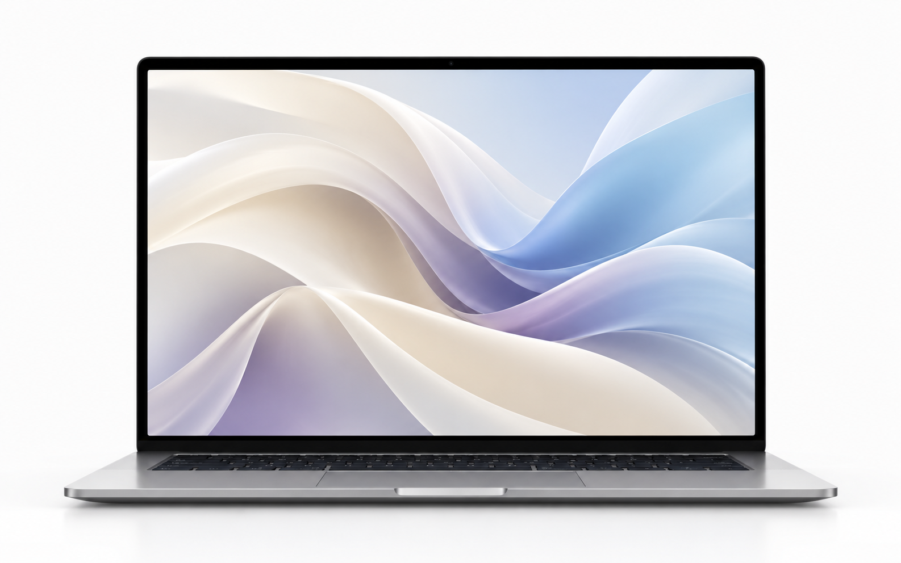

A new browser, made for the present.
The browser that lets you
A dependable, local-first browser for the work, play, and everything in between.
Built for Windows and Linux.
01 / Browse with confidence
Built for Privacy
Chromecraft comes with uBlock Origin preinstalled and works on the secure Chromium framework, so it can help spot when something is legitimate or a scam.
Site check
Unusual request detected before sign-in.
02 / Made to feel familiar
Built for Material 3
Chromecraft uses Material 3 for the look and feel you love. Or, switch to a different feel across your entire browser.
03 / Let the browser lend a hand
Built for Agentic AI
Chromecraft can run actions on your behalf - free, with no subscriptions required.
- Organize open tabsDone
- Compare selected pagesWorking
- Draft a quick summaryReady
04 / Chromecraft Hyperdrive
Hyperdrive
When Hyperdrive is on, Chromecraft predicts which sites you might head to next and preloads them, so they open almost instantly when you click.
Opt in. No learning telemetry. Private by default.
05 / Quiet on command
